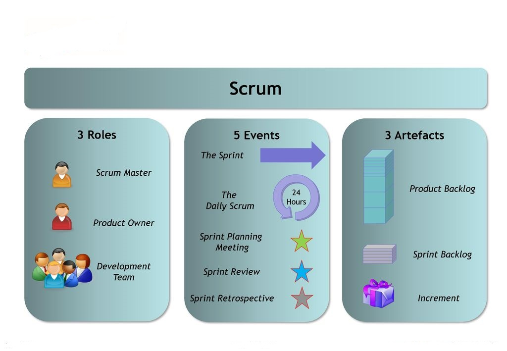
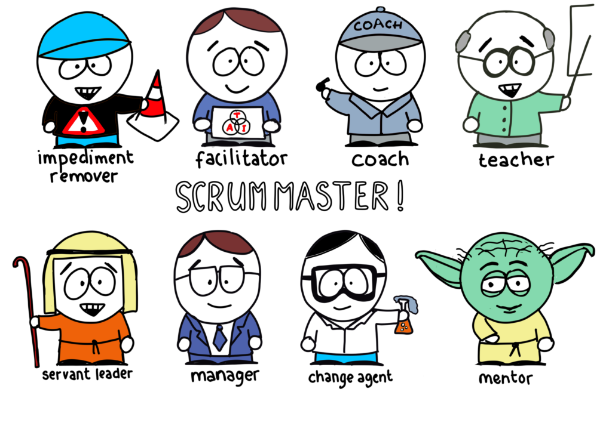
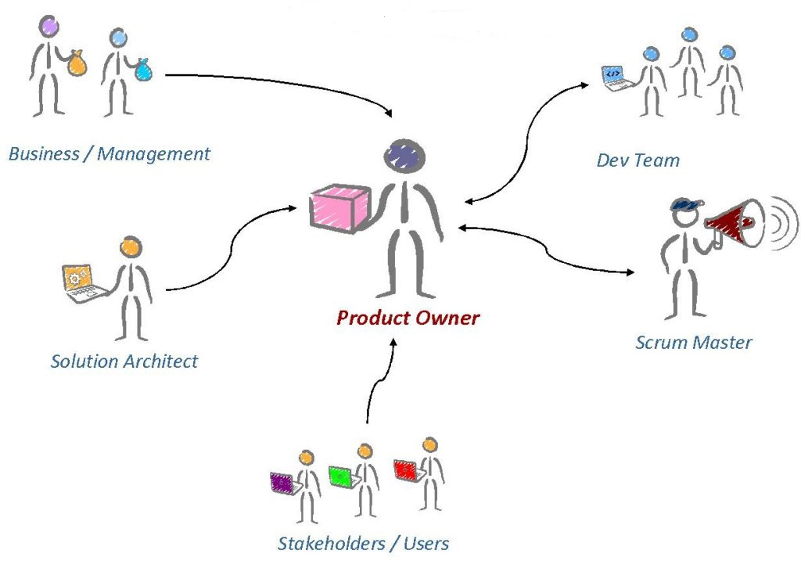
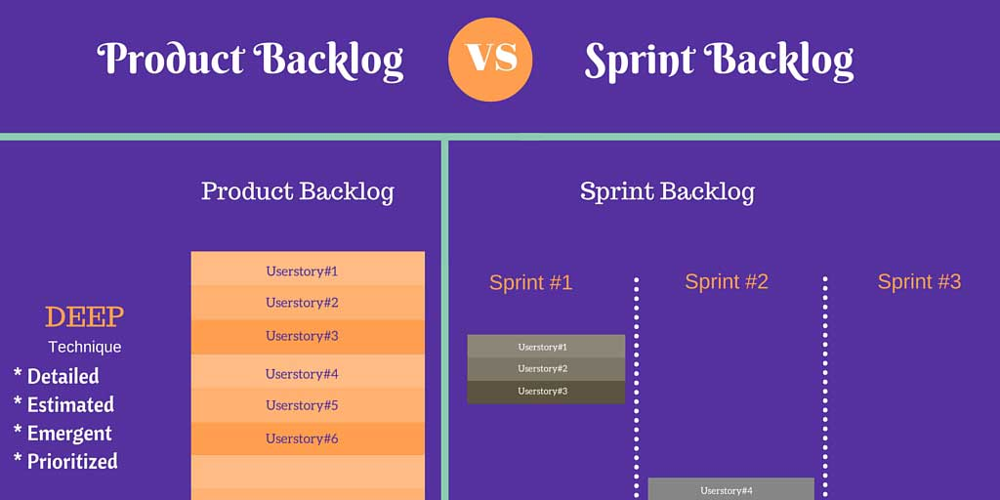
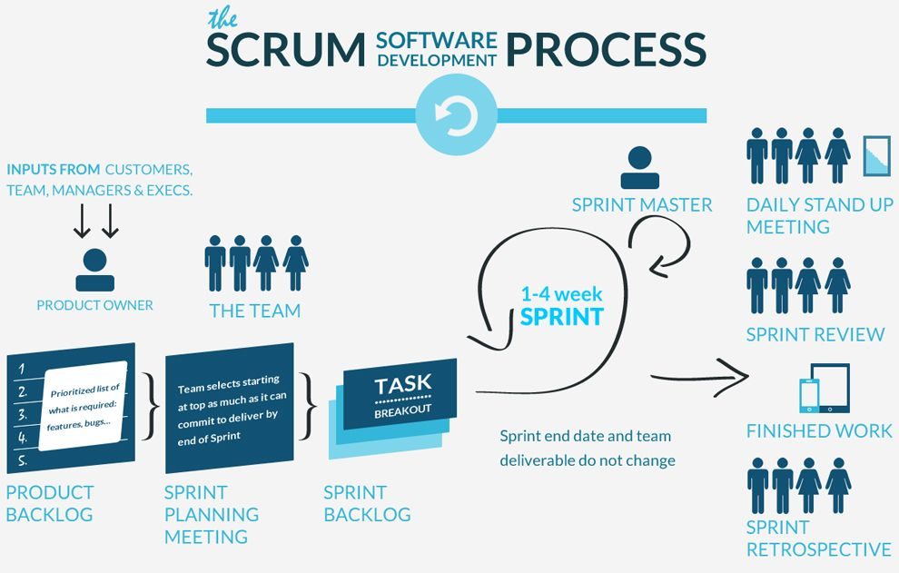
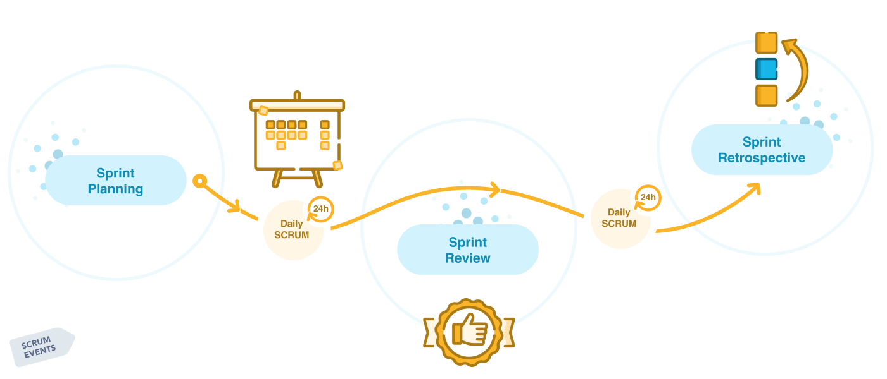
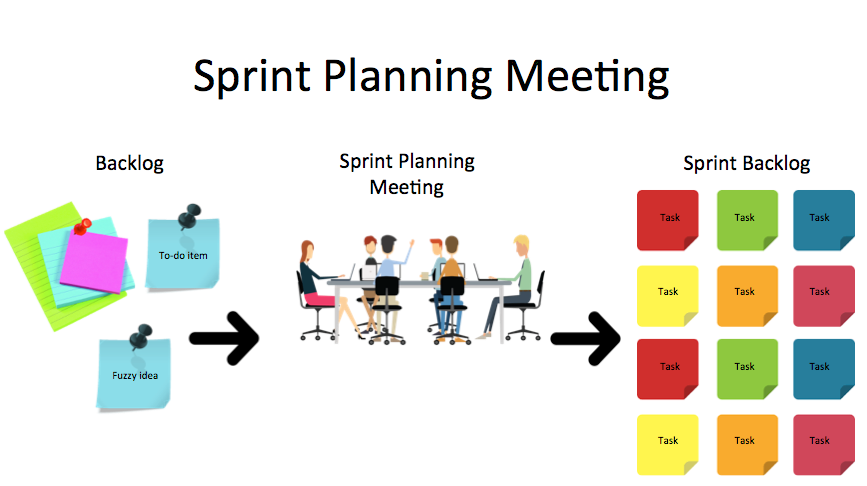
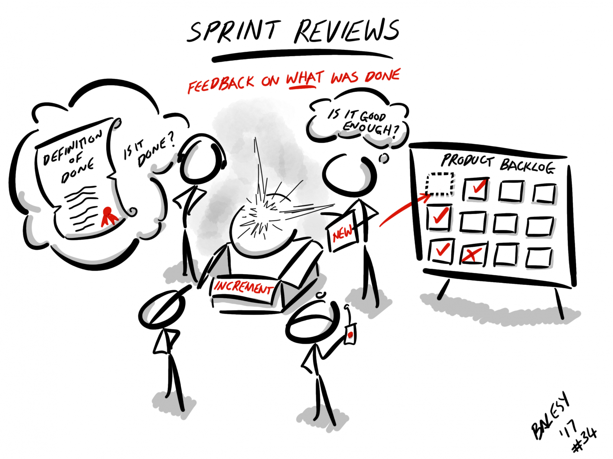
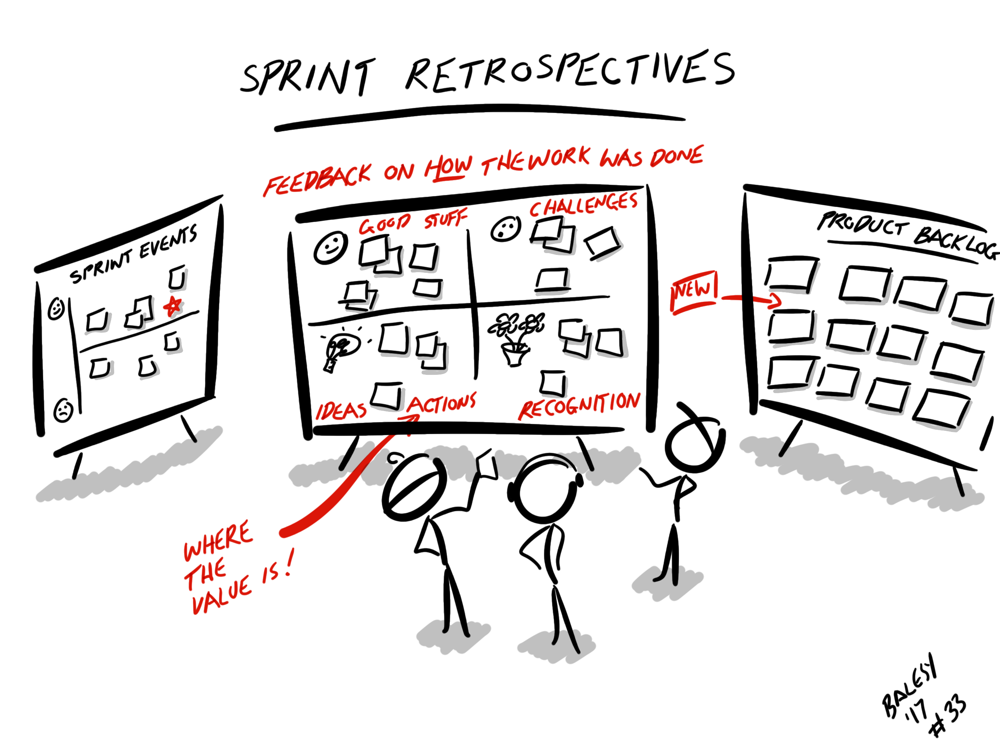

First of all, let's define the term "scrum".
What is scrum???
According to official documentation
a framework within which people can address complex adaptive problems, while productively and creatively delivering
products of the highest possible value
What is scrum???
a framework within which people can address complex adaptive problems,
while productively and creatively delivering products of the highest possible value.
I think it will be useful to know where it is used:
Where the scrum is used???
Scrum has been used extensively to...
Research and identify technologies, and product capabilities
Develop products and enhancements
Release products and enhancements, as frequently as many times per day
Sustain and renew products
Almost all companies use scrum in their workflow, for instance...
Which companies use scrum?
How can it be used in the workflow?
In order to use scrum in the workflow you need to learn the basic rules?
How can it be used in the workflow?
The rules of Scrum bind together the roles, events, and artifacts. Lets's consider each of them

First, team roles: scrum master, product owner, dev team. The recommended Development Team size in Scrum is from 3 to 9 members
which do not include the Scrum Master and the Product Owner. Let’s focus on each role in detail.
Scrum roles
Scrum Master is the person who is responsible for coaching the Development Team and the Product Owner.
He is the one who ensures that the team understands the Scrum Values and Principles and is able to practice them.
Scrum master also helps and supports the team to become self-organized.

Next, product Owner is the voice of the customer and hence is responsible for bridging the gap between the development team and stakeholders.
The product owner is also responsible for choosing what should be included into a project.

Another very important part of the Scrum Team is the Development Team.
The Development Team consist of developers proficient in their own area.
The Development Team
The next important part of scrum are product and sprint backlog
A product backlog is a prioritized list of work for the development team that is derived from the roadmap and its requirements. The most important items are shown at the top of the product backlog so the team knows what to deliver first.
The sprint backlog is a list of the most important tasks of the product backlog. This is a list of optimization tasks that the team will perform in the next sprint.

Before considering the stages of work in scrum let's define sprint. Sprint is one timeboxed iteration of a development cycle. Within a Sprint, planned amount of work has to be completed by the team and made ready for review.
Sprint can be as short as a few days and generally are no longer than 3 – 4 weeks. The main goal of the sprint is the implememntation product
How use scrum?
The first thing you need to do is create product backlog of your project. After that, you can start a sprint.
How to Use Scrum?

Sprint includes: sprint planning, daily meeting, sprint review, sprint retrospective.

Scrum events
This is a meeting led by the scrum master and is where the team decides on the sprint goal.
Specific use stories are added to the sprint from the product backlog.
At the end of the planning meeting, every scrum member needs to be clear on what can be delivered in the sprint.

This is a daily super-short meeting that happens at the same time (usually mornings) and place. Many teams try to complete the meeting in 15 minutes. This meeting is also called a ‘daily stand-up’ emphasizing that it needs to be a quick one.
The goal of the daily scrum is for everyone on the team to be on the same page and to get a plan out for the next 24 hours.
Sprint review
At the end of the sprint, the team gets together for an informal session inspect the increment. The development team demonstrate the backlog items that are now ‘Done’.
The product owner can decide whether or not to release the increment.

Sprint retrospective
The retrospective is where the team comes together to discuss what worked and what didn’t work in a sprint or even for certain ceremonies.
The idea is to create a place where the team can focus on what went well and what needs to be improved for the next time, and less about what went wrong.

ADVANTAGES OF SCRUM
Fast
Lightweight
The cost of managing is inexpensive
Helps in improving the product quality
Team members can be creative and get to know all the modules of the project.